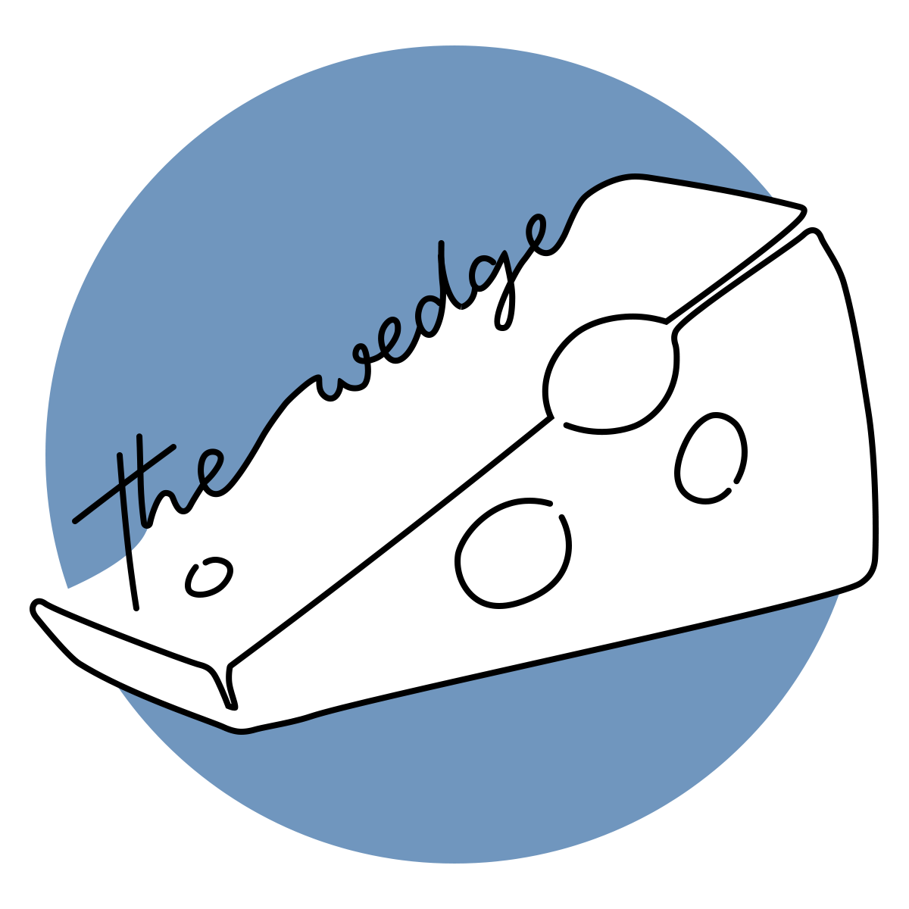
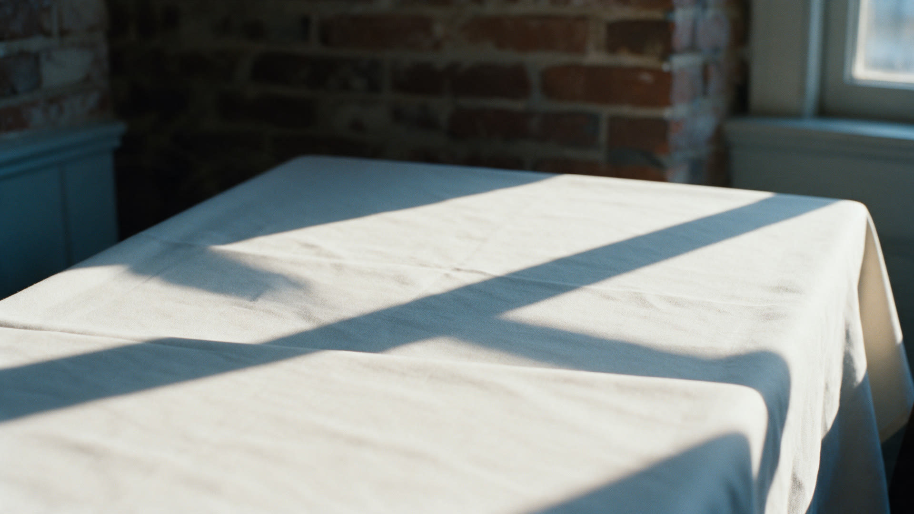
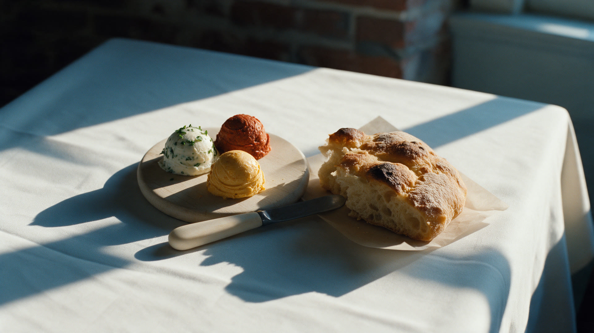
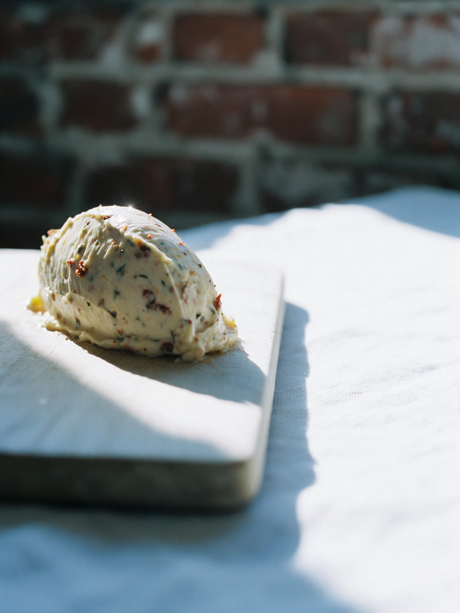
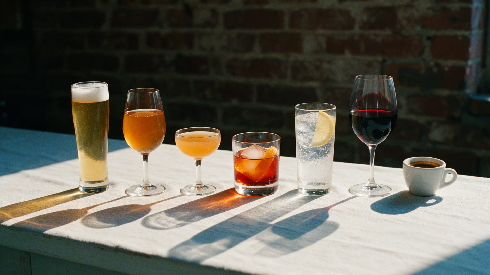
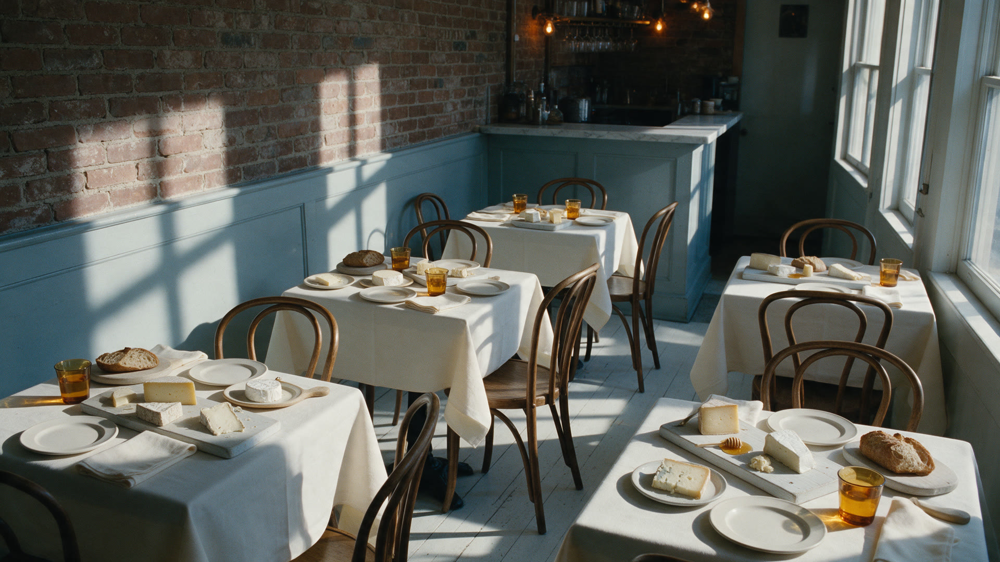
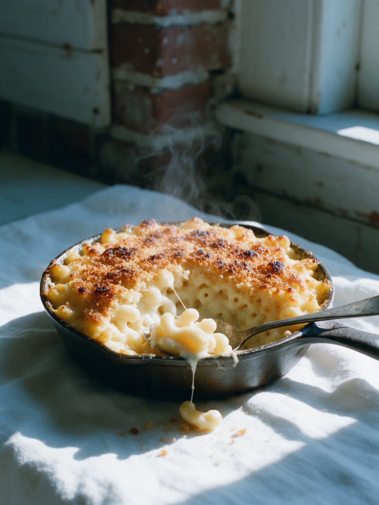

Drafts
- Surprise, Surprise5
- Mango Goseface Killah12
- Cold Brook Pilsnerask
- Cream Ale5
Free Wave Hazy IPA, no alcohol.

The Wedge

2802 James Street, Syracuse
A cheese bar on the near east side. Dinner Wednesday to Saturday, brunch on Sunday, and a mac that is a different cheese every single day.

First on the table
The cheese comes from The Curd Nerd a mile up the road, the bread from BreadHead. Neither of those is our doing and we are not going to pretend otherwise.
Wedge Veg
To drink
Ciders from people who grow the apples, orange wine by the glass, and a five dollar draft that we will not identify.

Free Wave Hazy IPA, no alcohol.
Yes, one of the cocktails is named after a blue cheese.
Bubbles
Whites
Others
Coffee

Happy hour is Wednesday and Thursday, four until five. Small plates and drink specials, and the bar is the best seat for it.
The entire dessert menu
Cheesey. Chocolatey. Fruity. Cakey.
That is all of it. You pick an adjective and the kitchen picks the dessert. Nobody has sent one back yet.

Today
Dinner, 4pm until 10pm, Wednesday to Saturday.
Three things on this page have no answer on them, and that is not an oversight. Ask whoever brings the water.
2802 James Street